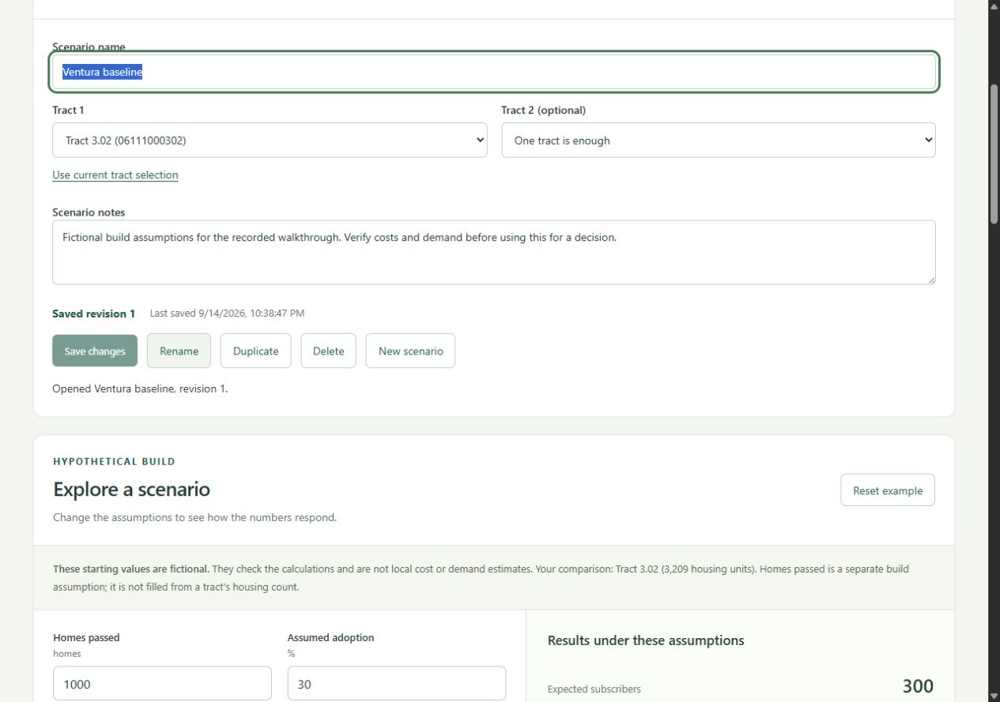

Public data · Web application
FiberScout
A research workspace for 190 Ventura County census tracts. Compare areas, change build assumptions, and export a report with its sources attached.
The public demo includes the research tools. Accounts and saved scenarios are demonstrated in the project walkthrough.
